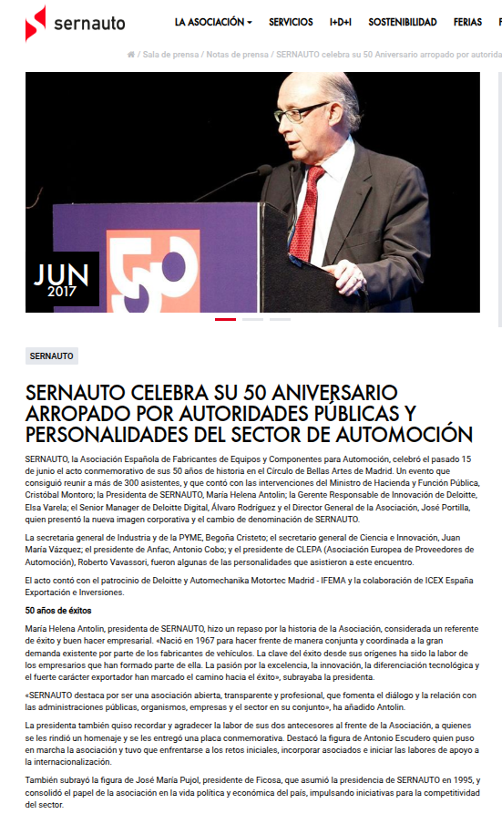
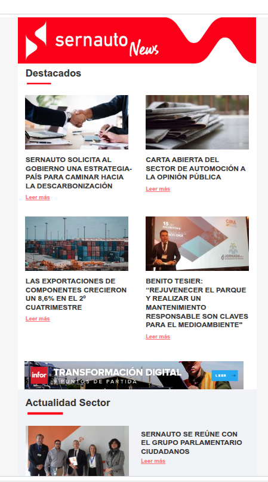
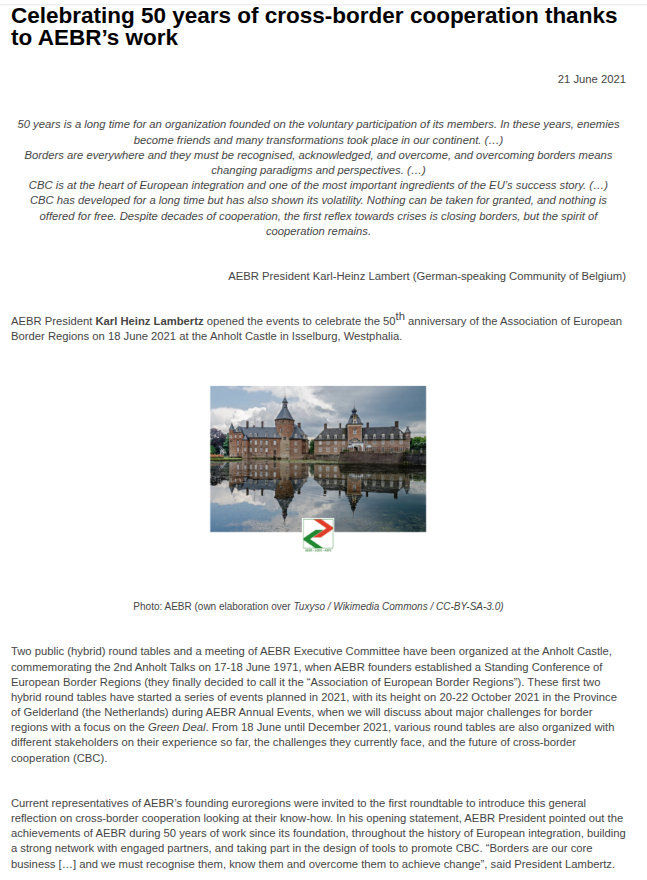
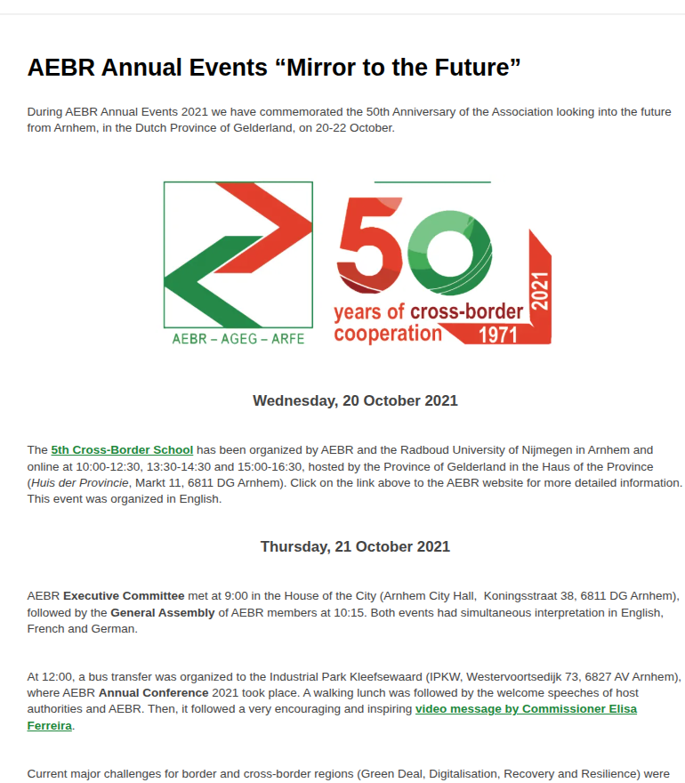
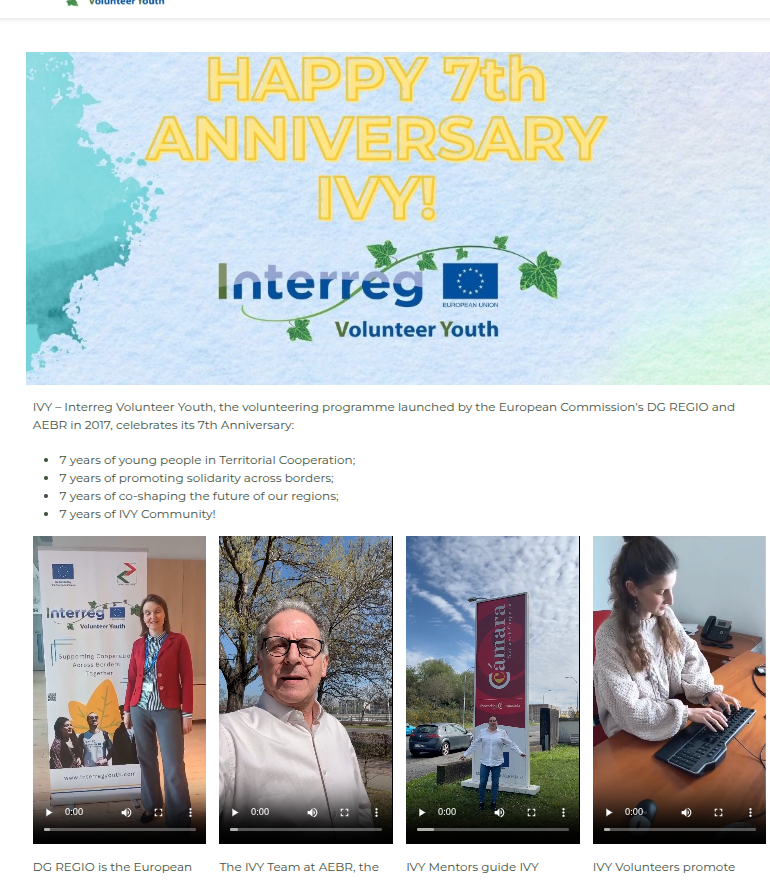

01. Disseminating EU Impact
Stories of European Cooperation (AEBR)
The Challenge: Translating highly technical EU Cohesion policies into engaging stories for the general public.
My Action: Acted as Editor for 5 specific issues, coordinating cross-border content across 5 macro-regions.
The Result: Delivered compelling editorial pieces ensuring strict compliance with the EU's visual identity guidelines (proper use of the EU emblem and funding statements), guaranteeing zero financial compliance issues during external audits.
Hover and click the covers below to read the original publications:
02. Community Roots & horizontal decision-making
Grassroots organizing in Madrid's CSOAs
The Roots: Growing up in a small rural village of just 400 inhabitants gave me an inherent, lived understanding of interdependence, mutual support, and community resilience.
My Action: I translate these rural values into urban grassroots organizing. I am deeply involved in a self-managed social center (CSOA) in Madrid, where we actively try to apply similar structures based on Sociocracy and horizontal decision-making frameworks to facilitate assemblies and manage collective projects.
The Result: A practical expertise in non-hierarchical governance, active listening, and consensus-building.
03. Media Relations & Advocacy
SERNAUTO 50th Anniversary & Press Office
The Challenge: Managing high-stakes corporate communications and institutional relations for the Spanish Association of Automotive Suppliers.
My Action: I organized the 50th Anniversary event, a major milestone that gathered over 300 attendees, including the Spanish Minister of Finance. Alongside event management, I drove the daily press office, curating press releases and newsletters to engage national media.


04. Youth Advocacy & Continental Events
Empowering Youth at EURegionsWeek & AEBR's 50th
The Context: Traditional EU politics can feel distant from the younger generation. My goal was to bring the voices of the Interreg Volunteer Youth (IVY) directly to the center of the European debate.
My Action: I drove communication campaigns for major continental events, including the European Week of Regions and Cities and the European Youth Week. I also co-organized the AEBR 50th Anniversary, ensuring that young volunteers and grassroots stories were featured alongside high-level policy-makers.
The Result: Successfully rebranded institutional milestones into dynamic, youth-led celebrations (such as the #Youth4Coop campaign), proving that EU cooperation is driven by its people and inspiring cross-border solidarity.
📸 View Event Photo Gallery


05. Digital Sovereignty & FOSS
Full-Stack Web Development
The Philosophy: True community resilience requires technological independence from corporate monopolies.
My Action: As a certified MERN Stack Developer, I actively advocate for decentralized platforms within the Fediverse (Mastodon, PeerTube). This interactive portfolio features pure JavaScript scroll animations, built from scratch without heavy frameworks.